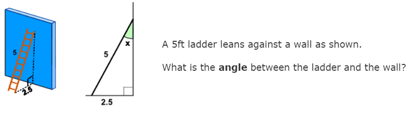
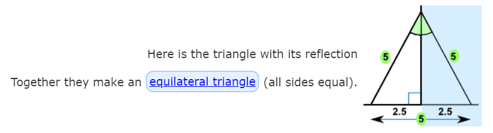
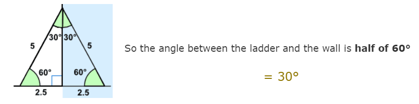

Chapter 2
Solving Triangle by Reflection
We often wondering how to find the angle of a triangle when have a data about the length of the 2 sides of triangle.
This can be solved using Reflection:
An equilateral triangle is a triangle which has same length in all the three sides. The angle in an equilateral triangle are all 60 o.
